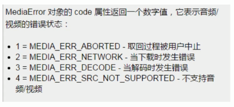
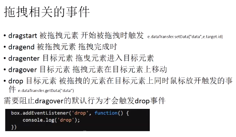

优化动画、存储、历史记录、worker异步
requestAnimationFrame
1) 页面刷新前执行一次
2) 1000ms 60fps –> 16ms
3) cancelAnimationFrame
4) 用法和setTimeout类似
5) 兼容性
requestAnimationFrame(f)
cancelAnimationFrame(id)
客户端存储
1) storage
localstorage
存
loaclStorage.name = 'aimee'loaclStorage.info = JSON.stringify({name:'aimee',company:'dy'})取出数据
localStroage.nameJSON.parse(localStorage.info)API
- setItem(name,val) 设置属性值
- getItem(name) 获得属性值
- removeItem(name) 移除属性
- clear() 清除属性
存储的有效期
localStorage --> 永久的，除非手动删除
sessionStorage --> 临时，窗口关闭就没有了
cookie --> 设置有效期，在有效期内存在
作用域
localStorage --> 文档源限制
sessionStorage --> 文档源限制 + 窗口
cookie -->
+ seesionstorage
2) cookie
存储信息到用户的设备上，数据量较小
navigator.cookieEnabled
检测是否启用了cookie
+ 设置cookie值：
document.cookie = "name=aimee"
(每次只能设置一个值，因为浏览器会认为后面的键值对是这个cookie的属性)
+ 获得cookie值：
document.cookie
不建议出现分号，逗号，空格的奇怪的符号
encodeURIComponent()
decodeURIComponent()
设置cookie存储期限
1. document.cookie = "name=scott;max-age=1000"
2. expires 当前时间加上保存时间
1
2
3
var timestamp = (new Date()).getTime() + 10000;
var expires = new Date(timestamp).toGMTString();
document.cookie = "name=scott;expires="+expires;
3. domain
4. path
删除cookie max-age = 0
需要带上键值对
document.cookie = "name=scott;max-age=0"
expires 设置为之前的时间
document.cookie = "name=scott;expires=...";
历史记录
worker
history
- history.back()
- history.forward()
- history.go(n)
为什么要管理历史记录？
history api的作用？
SPA
通过修改hash和hashchange事件来实现历史记录管理
- pushState
history.pushState(state,title,url); 添加一条历史记录
- replaceState
history.replaceState(state,title,url); 替换当前的历史记录
参数
- state： 一个与指定网址相关的状态对象，popstate事件触发时，该对象会传入回调函数中。如果不需要这个对象，此处可以填null
- title： 新页面的标题，但是所有浏览器目前都忽略这个值，因此这里可以填null
- url： 新的网址，必须与当前页面处在同一个域。浏览器的地址栏将显示这个网址
事件
- popstate 事件
历史记录发生改变时触发
调用history.pushState()或者history.replaceState()不会触发popstate事件
- hashchange 事件
当页面的hash值改变的时候触发，常用于构建单页面应用
Worker
var worker = new Worker(‘worker.js’);
worker文件必须和主文件满足同源策略
worker和主线程之间的通信
- postMessage(n) 方法
- message 事件
结束一个worker
- close() 在worker作用域中调用（worker.js）
- terminate() 在worker对象上调用（主进程的worker对象上worker.terminate）
worker 其他特性
- importScripts(‘./math1.js’,’./math2.js’)
worker只是window的子集，只能实现部分功能，不能获取到window，document，所以这里不要引jquery和zepto。可以引入一些计算类的库
- 作用域globalWorkerScope
- 可以继续生成worker对象（chrome暂时还不支持，浏览器支持情况不好）
- navigator
- XMLHttpRequest
- setTimeout/serInterval
h5地理位置信息、重力感应
geolocation
- window.navigator.geolocation
getCurrentPosition() // 获取当前的位置信息
watchPosition() // 监视位置变化，和1参数一样
clearWatch() //清楚位置监视
getCurrentPosition(s,e,p)
- success 回调（必须）
- error 回调
- options 参数
- 需要翻墙
PositionError对象
- 用户拒绝 code = 1
- 获取不到 code = 2
- 链接超时 code = 3
配置参数
- enableHighAccuracy 是否需要高精度位置默认false
- timeout 单位ms 请求超时时间 默认infinity
- maximumAge 单位ms，watchPosition方法则不停地取用户的地理位置信息，不停地更新用户的位置信息。位置信息过期时间 设置为0就无条件获取新的地理位置信息 默认0
watchPosition
- var id = geolocation.watchPosition(fu)用于注册监听器，在设备的地理位置发生改变的时候自动被调用
- clearWatch(id) 使用clearWatch 清楚监听
devicemotion 监听加速度变化
1 | window.addEventListener('devicemotion',function(){ |
devicemotion 事件所包含的属性
- accelerationIncludingGravity (包括重心引力，z轴方向加了9.8，在x，y方向上的值两者相同) 重力加速度
- acceleration 重力加速度
- rotationRate(alpha,beta,gamma)旋转速率
- interval 获取的时间间隔
均为只读属性
- alhpa 表示设备上沿z轴上的旋转角度，范围为0~360
- beta 表示设备上在x轴上的旋转角度，范围为-180~180 它描述设备由前向后旋转的情况
- gamma 表示设备在y轴上的旋转角度，范围为-90~90 它描述是设备由左向右旋转的情况
- webkitCompassHeading 与正北方向的角度差值。正北为0度，正东为90度，正南为180度，正西为270度。因为0度是正北，所以叫指北针
- webkitCompassAccuracy 指北针的精确度，表示偏差为正负多少度。一般是10
多媒体
- audio 音频
- video 视频
音频/视频
- 基础用法
- 属性
- 事件
audio元素和video元素
<audio id="audio" src="./成都.mp3"></audio><audio id="video" src="./成都.mp4"></audio>
一些属性
- autoplay 自动播放
<audio src="成都.mp3" autoplay></audio> - controls 设置控件
<audio src="成都.mp3" autoplay controls></audio> - preload(none/metadata/auto) 预加载，规定是否在页面加载后载入视频
- node 不需要加载数据
- metadata 元数据 诸如时长、比特率、帧大小这样的原数据而不是媒体内容需要加载的
- auto 浏览器应当加载它认为适量的媒体内容
<audio src="成都.mp3" autoplay controls preload="auto"></audio>
- loop 是否循环播放音/视频
<audio src="成都.mp3" autoplay controls loop preload="auto"></audio> - poster(video 独有) 当视频不可用，使用一张图片替代，否则是空白
<video src="成都.mp4" poster="封面.jpg" controls></video>
多类型资源
1 | <audio id="music"> |
脚本化
- var audio = document.getElementById(‘audio’);
- var audio = new Audio(‘./laojie.mp3’)
- var audio = document.createElement(‘video’)
设置属性
controls/loop/preload/autoplay属性
- audio.controls = true;
- audio.loop = ‘loop’;
- audio.preload = ‘auto’;
- audio.autoplay = true;
currentSrc 资源链接，媒体数据的url地址
注意：window.onload
方法
- play() 方法
- pause() 方法
- load() 方法
重新加载视频/音频元素，用于在更改来源或其他设置后对音频/视频元素进行更新
音量 volume属性
表示播放音量，介于0（静音）~1（最大音量）之间，默认1.将muted属于性设置为true则会进入静音模式，设置为false则会恢复之前指定的音量继续播放
超过范围会报错[0,1]
播放速率 playbackRate
用于指定媒体播放的速度。该属性值为1.0表示正常速度，大于1则表示“快进”，0~1之间表示“慢放”，负值表示回放。
每个浏览器实现的会有差别，具体看浏览器实现
currentTime/duration属性
- currentTime 设置或返回音频/视频播放的当前位置
- duration 返回当前音频/视频的时长（window.onload）
- 单位 秒
played/buffered/seekable
played属性返回已经播放（看过）的时间段，buffered属性返回当前已经缓冲的时间段，seekable属性则返回用户可以跳转的时间段。这三个属性都是TimeRanges对象，每个对象都有一个length属性以及start()和end()方法，length属性表示当前的一个时间段，start()与end()分别返回当前时间段的起始时间点和结束时间点（单位是秒，起始参数是0）
下面代码确定当前缓存内容的百分比：var percent_loaded=Math.floor(song.buffered.end(0) / song.duration*100)
paused/seeking/ended
这三个属性用来查询媒体播放器状态，paused为true表示播放器暂停。seeking为true表示播放器正在调到一个新的播放点，如果播放器播放完媒体并且停下来，则ended属性为true
作为了解
canPlayType() 方法
1 | var a = new Audio(); |
事件
- play 开始播放触发
- pause 暂停触发
- loadedmetadata 浏览器获取完媒体的元数据触发
- loadeddata 浏览器已经加载完当前帧数据，准备播放时触发，注意IE8
- ended 当前播发结束后触发
readyState属性音频的当前就绪状态
表示音频元素的就绪转态：
- 0 = HAVE_NOTHING 没有关于音频是否就绪的信息
- 1 = HAVE_METADATA 关于音频就绪的元数据
- 2 = HAVE_CURRENT_DATA 关于当前播放位置的数据是可用的，但没有足够的数据来播放下一帧/毫秒
- 3 = HAVE_FUTURE_DATA 当前及至少下一帧的数据是可用的
- 4 = HAVE_ENOUGH_DATA 可用数据足以开始播放
networkState属性返回音频的当前网络状态
表示音频元素的当前网络状态：
- 0 = NETWORK_EMPTY 音频尚未初始化
- 1 = NETWORK_IDLE 音频是活动的且已选取资源，但并未使用网络
- 2 = NETWORK_LOADING 浏览器正在下载数据
- 3 = NETWORK_NO_SOURCE 未找到音频来源
error 事件在音频/视频(audio/video)加载发生错误时触发

drag & drop FileReader Web Socket
drag & drop
- 常用于各种拖动操作中
- 创建可拖动元素
<div id="drag" draggable="true"></div>
拖拽相关的事件
